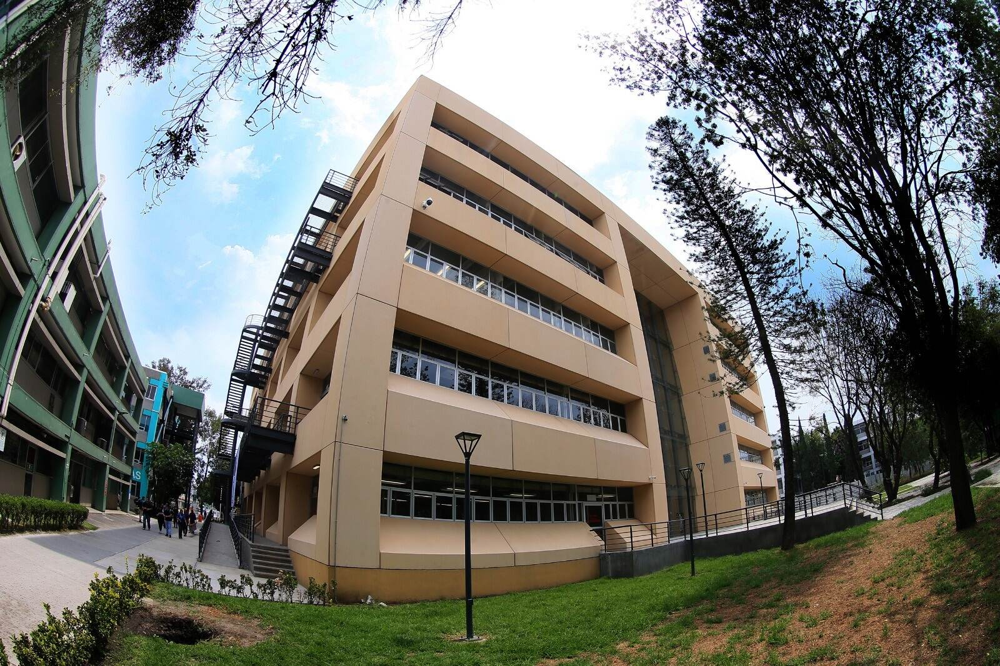

Folio COM-ME-IZT-2026-0000
Unidad Iztapalapa, Ciudad de México, a FECHA

Comunicado
TITULO
BAJADA
A la comunidad universitaria de la Unidad Iztapalapa:
Movimiento Estudiantil UAM-I
FIRMANTE
Documento de carácter informativo del Movimiento Estudiantil UAM-I. No constituye documentación oficial de la Universidad Autónoma Metropolitana ni de sus órganos.
Publicado en meuami.org